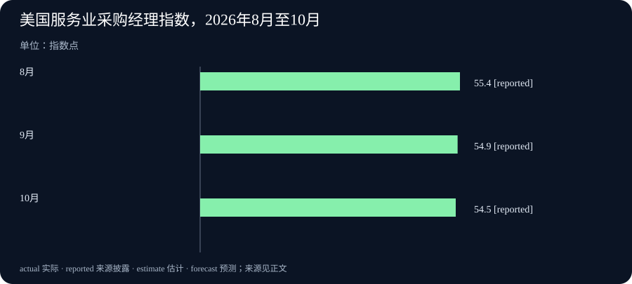

Daily Intelligence · 2026-11-05
新闻研究截止于北京时间 2026 年 11 月 5 日 07:03:12，优先检索窗口从 11 月 4 日 07:03:12 开始。美国服务业报告可核对到北京时间 11 月 4 日 23:00。其余主线按原文的 11 月 4 日日期纳入。腾讯通稿页面显示 19:13，但未独立确认该时钟的时区和是否为首次公开。OpenAI 研究与三菱商事财报原文未披露发布小时。
Today's Thesis
技术可以更快地看清材料、发现软件问题，成果能否交到使用者手上，仍取决于开放范围、复查与分发。今天的经营数据也显示了不同环节的速度差。三菱商事上半年利润增加，美国服务业调查中的新订单却有所降温，判断需求须先分清对象和时间。
Executive Summary
腾讯发布混元 Hy4 正式版。它首次加入看图能力，并可在配套产品中操作电脑界面。腾讯云的工作台已接入，供开发者自行运行模型所需的权重文件及系统说明仍在发布计划中。
OpenAI 披露 10 月中旬的一次网络安全试验。研究系统在隔离环境中复现了 1,724 个 Linux 内核漏洞，其中 948 个生成了可取得最高系统权限的验证样例，并配有候选修补代码。用户何时受益，还要看维护者审核、发布更新和使用者安装三个步骤。
三菱商事披露上半年归母利润约 6,197 亿日元，同比增长 74.2%，同时上调全年预测。美国 10 月服务业采购经理指数从 54.9 降至 54.5，仍高于 50。相比前两期，今天新增的是正式版能力与接入范围、Linux 试验结果、三菱商事半年财报，以及此前仅列入日程的美国服务业调查实值。
AI Daily
1. 腾讯混元 Hy4 正式版上线，加入看图与操作电脑的能力
腾讯 11 月 4 日发布混元 Hy4 正式版。它可以分析图片和图表，也能借助接入的工具操作图形界面或输入命令。举例说，接入合适工具后，模型可以读取图表并在应用中继续下一步操作。这个例子说明两项能力怎样配合。用户仍需确认应用开放了哪些工具，以及哪些动作要由人批准。腾讯云面向企业搭建智能助手的 ADP 工作台已接入该模型，并公布该入口的限时调用折扣至 12 月 31 日。腾讯云 ADP 发布说明
相比 8 月的预览版，这次变化包括正式服务上线，以及新增的视觉理解和电脑操作。腾讯和旗下金融科技团队组织的评测覆盖 579 项金融任务，Hy4 在该组任务中得 3.04 分，腾讯云说明满分为 4 分。这组结果可以帮助读者选择值得复测的任务。若要判断自己的对账或研究工作是否改善，还需查看同类输入、错误类型和人工复核用时。腾讯正式版发布通稿
腾讯同时表示，将在随后数日公开权重和系统说明。权重是模型训练后形成、供推理使用的一组数字，下载权重通常是团队自行部署所需的一步。当前确认的是腾讯所列服务入口已上线。自行部署还要等到正式文件、使用条款及运行要求可核对。
2. OpenAI 披露 Linux 漏洞试验，从验证到用户更新还有几步
OpenAI 11 月 4 日公开一次 10 月中旬开展的试验。Linux 内核是操作系统的核心，管理程序访问内存和设备等资源。研究团队让一个尚待推出的安全模型协助找线索，再在隔离环境里复现问题。团队报告共复现 1,724 个漏洞，其中 948 个不同漏洞在试验中被证实可让原本权限较低的本机用户取得最高系统权限。团队为这批问题生成了候选修补代码。整个试验消耗的模型调用额度折合约 121 万美元。OpenAI 原始研究报告
研究人员检查漏洞证据、拟议修补和严重程度，再按维护者建议优先提交严重问题。部分问题在试验完成时，社区已另外修补或正在讨论。这个细节关系到维护者的工作量：如果报告仍以扫描开始时的代码为准，社区可能需要花时间复核已经处理过的问题。要了解这次试验怎样影响普通用户，应分别跟踪社区确认的问题、正式版本纳入的修补，以及设备实际安装的更新。
这项新披露的重点是受控试验中验证了多少问题，以及怎样将证据交给维护者。这个金额只计算这一次研究的模型调用。人工复核、组织协调和安装更新各有自己的成本，公开资料没有给出这些环节的完整费用。前一期的软件修复消息关注如何保住既有测试案例，本期关注操作系统漏洞能否复现、修补由谁接收及如何送达用户。
Business Daily
1. 三菱商事半年利润增加，上调全年预测
日本综合商社三菱商事 11 月 4 日披露截至 9 月 30 日的半年结果。公司经营能源、矿产、食品等业务。半年收入约 10.41 万亿日元，同比增长 20.5%。归属于母公司股东的利润，也就是扣除外部少数股东应占部分后的利润，约为 6,197 亿日元，同比增长 74.2%。公司把收入和毛利的增加与较高的市场价格联系起来。三菱商事财报，第 1、3 页
现金流量表提供另一层信息。经营活动带来的现金净流入约为 9,913 亿日元，上年同期约为 4,280 亿日元。同期投资活动净流出约 1.13 万亿日元，其中收购业务的付款扣除随收购取得的现金后，净流出约 8,193 亿日元。公司正常经营带来更多现金的同时，也为投资支出了更多现金。这两项都值得看，才能理解为什么期末现金和现金等价物比财年初少。现金等价物指能很快换成现金的短期资产。
公司把截至 2027 年 3 月的全年归母利润预测从 1.1 万亿日元调高到 1.2 万亿日元，较原预测提高约 9.1%。管理层预期能源与电力解决方案及矿产资源业务受有利市场条件支持。这个判断关系到尚未结束的财政年度，半年财报只能提供已经发生部分的结果。
2. 美国服务业调查仍指向扩张，新订单读数回落
美国供应管理协会（ISM）在当地 11 月 4 日 10:00（美国东部标准时间），即北京时间同日 23:00，公布 10 月服务业采购经理指数（PMI）。这项调查把受访企业对活动、订单、就业和交货变化的回答汇总成指数。综合读数从 9 月的 54.9 降至 54.5。按报告口径，50 以上通常指向服务业扩张。读数回落说明调查给出的扩张信号减弱，不能换算成产值增长率。ISM 十月服务业原始报告 · ISM 通稿的发布时刻
新订单读数从 59.8 降到 55.9，就业读数却从 50.1 升到 51.4。两项仍高于 50。投入价格指数由 74 降至 73，依然指向价格上涨较为普遍。交货读数由 53.2 升到 56.7，这个分项超过 50 表示交付放慢。四项一起读，可以看到订单扩张减慢、就业信号略强和交期变长同时出现。企业仍需要用实际订单、到货和采购报价核对自身情况。
11 月 3 日刊发的日报写的是制造业调查，并提到服务业报告即将发布。今天纳入的是新公布的服务业问卷实值。两个调查对象不同，可作为并列观察，也可用来识别需求变化在哪些领域出现，不能用其中一个推算另一个的增长幅度。
Macro Observation
三菱商事的半年报汇总一家企业从 4 月到 9 月的账目，美国服务业调查反映的是另一市场 10 月的经营方向。前者受市场价格、业务构成与投资活动影响，后者显示受访企业之间变化的分布。两份材料可以同时成立。能源和矿产价格支撑一家商社的收入，美国服务业新订单的扩张信号则较上月减弱。
采购上最有用的分歧来自订单和交货。假设一家企业看到新单增长趋缓，但核心供应商仍延长交期，它的库存决策就要同时考虑两个方向。需求预期偏弱会降低备货需要，交付不确定性会抬高断货成本。这个例子解释分项为何有用，实际采购量仍需用自己的合同和库存来判断。
Signal Dashboard
| 主线 | 已观察到的变化 | 下一步证据 |
|---|---|---|
| 腾讯混元 | Hy4 正式版新增视觉理解与电脑操作，指定服务已接入 | 权重下载、许可条件及实际任务复测 |
| Linux 安全研究 | 受控试验复现漏洞，生成了供维护者审阅的修补代码 | 社区接收记录、发行版本和实际安装覆盖 |
| 三菱商事 | 半年归母利润和经营现金净流入均高于上年同期 | 市场条件、投资付款与全年财报 |
| 美国服务业 | 综合与新订单读数下降，就业读数上升 | 后续调查、企业订单和报价 |
Deep Insight
谁负责把一个好结果送到使用者手上
模型发布往往同时说几件事：软件能处理新的材料，某个在线入口已经能用，开发团队以后还可以在自己的设备上运行。三件事各有交付对象。办公用户需要确认工作台已经提供功能，管理员需要确认模型能接触哪些文件和工具，自己部署的团队还要拿到权重、许可和设备要求。腾讯此次把服务入口和权重安排分在不同阶段，读者就能分别问两件事：今天在哪能试，何时能按自己的条件部署。
可用的入口也改变了检查办法。假设一个团队试用能看图的助手整理供应商报价，最早可以只让它读取同一批测试图片，由人核对币种、金额和交期。进入能操作电脑的阶段，团队还要决定助手能否改表、能否发给别人，以及误操作怎样恢复。测试时最好把“识别正确”和“动作获准”分开记录。这样，即使识别效果很好，也能看到交接到下一步时，谁必须确认文件、收件人和权限。
安全研究的交接更明显。复现漏洞表明某种问题在指定环境里能发生。拟议修补解决的是该问题的代码修改，维护者还要判断能否安全纳入版本。分发更新后，部署团队才有条件保护相应设备。假设一个旧问题在扫描期间已被别人修复，重复的报告仍可能描述一个真实问题，却不再是维护者当前应优先处理的工作。把问题对照当前版本重验，可以减少重复劳动，也让仍待修补的部分更清楚。
三菱商事的现金流给出一个经营上的对照。账面利润、经营现金和投资付款分别回答收益、日常经营带来多少现金、企业为未来业务花了多少钱。经营现金增加本身是可见进展，投资付款同时扩大也是真实发生的资金安排。审视这一期业绩，可以先问增长来自哪些市场和业务，再问收购款何时支付、今后会怎样贡献收益。只有后续的经营披露，才能检验新投资和较高预测如何兑现。
美国服务业问卷则提醒读者给变化留出一个明确的观测期。订单比上月弱、交货更慢，就业信号略强，三项可能来自不同企业。一个综合数字适合提示往哪里看。到了具体决策，读者需要拿分项与本行业的实际情况对照。对软件、安全和经营信息都可以用同一个检查顺序：先找到报告里的对象和阶段，再查下一位接手者能依据什么采取行动。
Tomorrow Watch
跟踪腾讯正式版权重、许可与系统说明是否分别出现，并比较实际使用入口的工具权限。对 Linux 研究，观察维护者是否接收修补、哪些版本包含更新，以及披露前复验怎样处理社区已经解决的问题。
三菱商事后续的分项利润、投资现金与市场价格可以检验本期预测假设。美国服务业则重点看新订单和就业是否继续分化，后续实物交付和企业报价能否解释交期与投入成本的变化。
One Chart
美国服务业调查综合读数，8 月至 10 月

三根柱子依次为 2026 年 8 月 55.4、9 月 54.9、10 月 54.5，单位为指数点。图中 reported 表示“来源披露的数字”。三个月均在 50 以上，综合读数两次回落，10 月比 9 月低 0.4 点。这个比较只描述同一套服务业调查。10 月的 54.5 反映受访企业报告的变化方向，实际服务业产值要看独立统计。ISM 原始报告历史序列
Quote of the Day
原文节录
Knowledge is of two kinds. We know a subject ourselves, or we know where we can find information upon it.
中文译文：知识有两种。我们自己了解一个题目，或者知道在哪里能找到关于它的资料。
人物：Samuel Johnson（塞缪尔·约翰逊）
出处为詹姆斯·鲍斯韦尔所著《约翰逊传》，1791 年初版，记述的是 1775 年一段谈话。鲍斯韦尔说，约翰逊在剑桥先生家里端详书脊，随后谈到为何查目录能帮助人认识一个题目。鲍斯韦尔原著转录 · 耶鲁大学鲍斯韦尔版本项目
编辑解读。知道资料在哪里，可以让自己和别人再查一遍。找到资料之后，还需要判断它记录了什么、适用于哪一段时间。
Action Items
- 混元正式版目前能在哪使用？ 把在线入口、可下载文件和运行条件分别记录，用一项实际任务检查图表读取、权限和人工复核时间。
- 安全修补走到哪一步？ 为关注的软件确认维护者发布的版本和设备安装版本，分别记录发现、修补发布与安装。
- 三菱商事的现金去了哪里？ 对照半年利润与现金流量表，分别追踪经营、投资与融资，再查看全年预测的前提。
- 调查回落来自哪一项？ 将订单、就业、价格和交货分项放在同一张记录里，用实际报价或订单对照自己的情况。
- 下一次什么证据会改变判断？ 先选一个具体的结果，例如正式权重、已安装的修补或相同口径的下月订单，再据新记录更新看法。